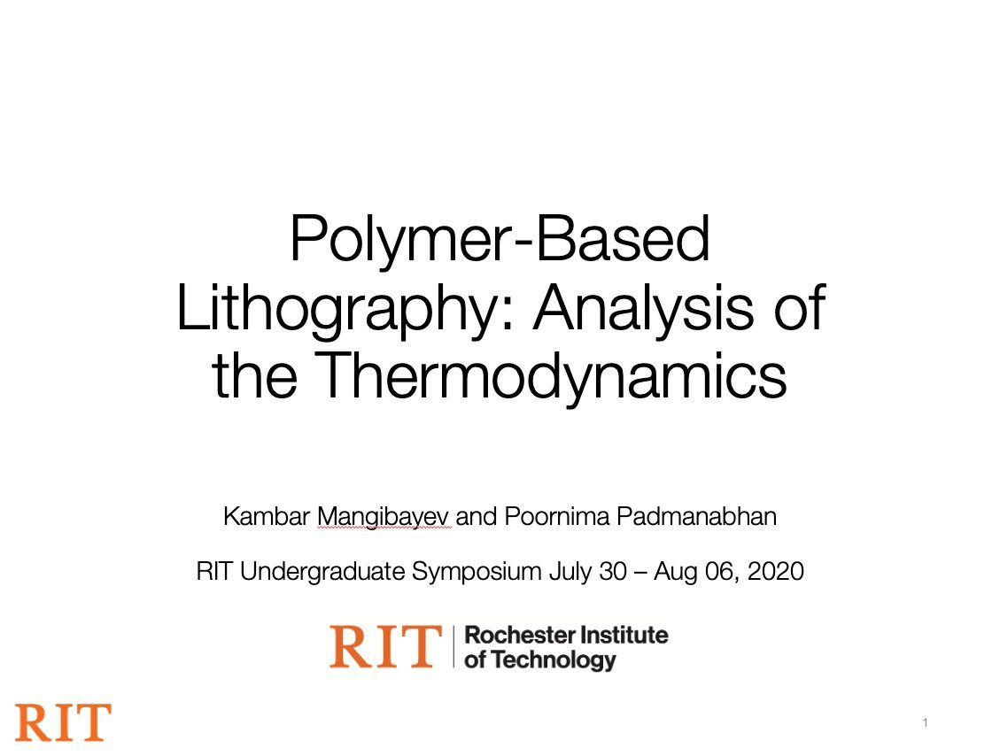

Polymer Lithography Simulation
RIT Honors research, Dr. Padmanabhan, 2020. LAMMPS.
Designed
Depending on the block ratio and chemistry, the same system settles into holes, spheres, stripes, or lamellae, and those shapes are what lithography then uses. The design space is which pattern you get.
Analyzed
The model is about 100 lines of molecular dynamics using the Weeks-Chandler-Andersen potential, run in LAMMPS on the RIT research cluster. Temperature, repulsion strength, and atom size each push the outcome chaotically, so we ran thousands of simulations to find where to start experiments instead of running expensive lab runs blind.

Built
The build here is the simulation itself, the WCA model and its LAMMPS runs. No physical rig.
Proved
The runs reached clean separated end states, and the results showed the interaction parameter falls with temperature and rises with repulsion strength. That's a starting map for the lab instead of a blind search.